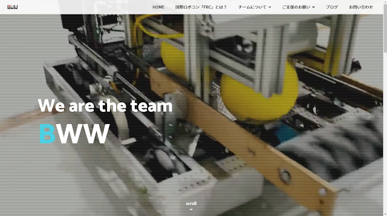
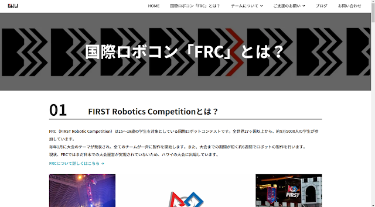
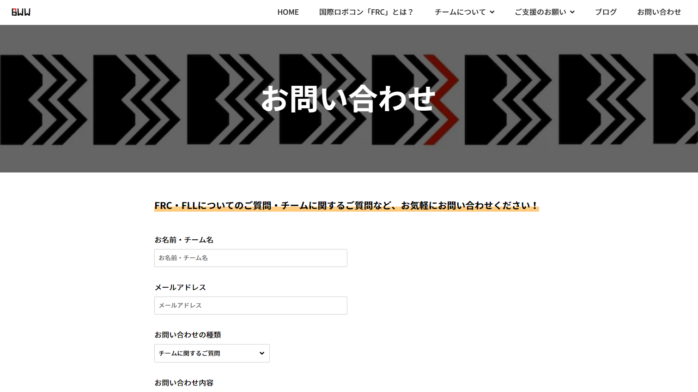
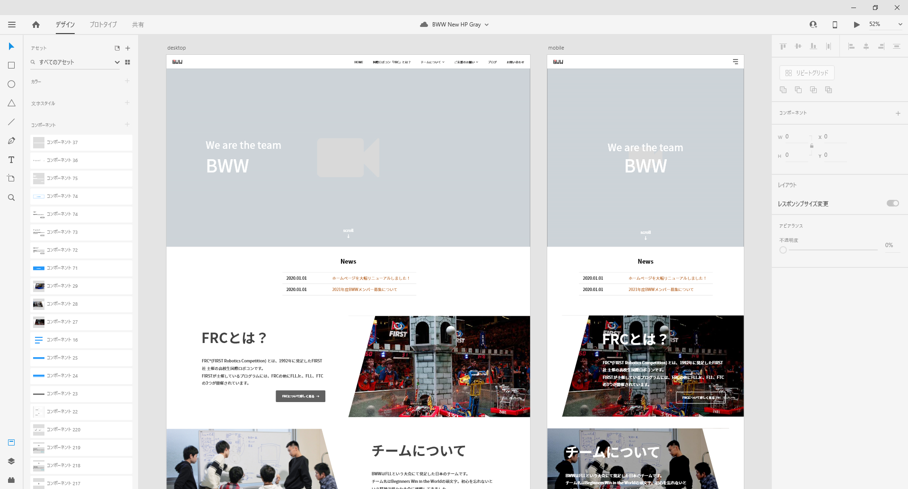

自分が所属しているFRCチーム「BWW」の新ホームページを1から制作しました。
旧ホームページにはGoogle Sitesと呼ばれるSaaSサービスを使用していましたが、
モバイル時のデザイン崩れやSEO対策が出来ないこと、OGPが設定できないなどデメリットが目立ってきたため、今回1から作り直すことになりました。
ホスティングサービスには表示速度や維持費の観点から静的サイトであるGitHub Pagesを採用し、HTML, CSS, JavaScriptのみを使用して制作しました。
お問い合わせフォームについては、PHPを使用することが出来ないため、GoogleフォームをカスタマイズしAjax送信を使用することで普通のフォームと遜色ない見た目に仕上げました。
  ページ速度改善のために画像の遅延読み込みやWebp画像の切り替え処理実装、Jquery不使用などの対策を行いました。 画像の遅延読み込みには標準実装のObserver APIを使用し、独自実装によって外部との通信量を抑えました。
また今回、プロトタイピングツールであるAdobe XDを使用し早期から完成イメージを示すことで、他メンバーと方向性の行き違いが起きないよう工夫しました。
